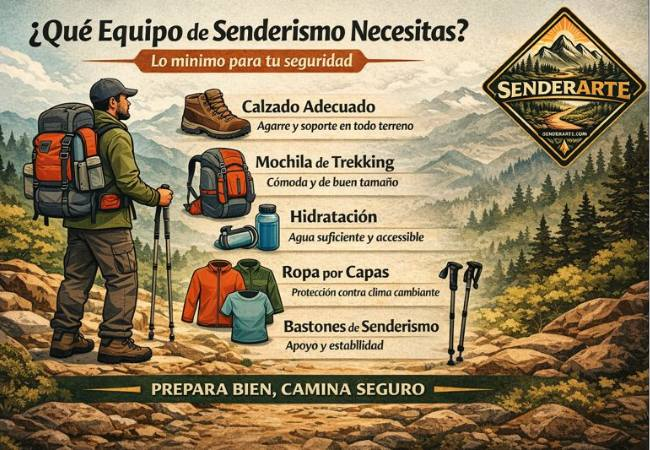
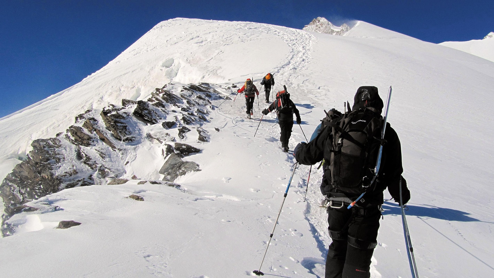

SENDERISMO

SENDERISMO
¿QUÉ ES EL SENDERISMO?
El senderismo es una modalidad deportiva que consiste en recorrer a pie caminos señalizados o no, preferentemente tradicionales. También se puede realizar por caminos rurales o tradicionales, vías verdes, pistas forestales, grandes o pequeños recorridos, etc. evita en lo posible el tránsito a través de rutas asfaltadas u hormigonadas.

¿CÓMO SE PRACTICA?
En primer lugar, es fundamental elegir la ruta adecuada para tu nivel de experiencia y condición física. Puedes empezar con senderos sencillos y cortos para familiarizarte con la actividad y luego ir aumentando la dificultad a medida que te sientas más cómodo.
Actualmente hay muchas formas de conocer la dificultad y duración de una ruta, mediante fichas, guías, webs (*1) o descargando en tu móvil el recorrido que te propones realizar. Te recomendamos que te familiarices en la interpretación de mapas (cartografía) y el uso de la brújula, serán tus compañeros inseparables en tus recorridos. También hay actualmente diversos sistemas de navegación para móviles o por GPS que te serán de mucha utilidad.
Planifica tus salidas con antelación.
Es importante tener en cuenta factores como la meteorología. Asegúrate de revisar el pronóstico del tiempo antes de salir y planifica tu ruta con antelación, teniendo en cuenta la distancia, el desnivel, la dificultad del medio y los puntos de interés que quieras visitar.
Familiarízate con sistemas señalización y clasificación de senderos (*2 – SL, PR, GR), los hitos, balizas informativas, sistemas de valoración como el MIDE (VER MÁS) que te indica aspectos como el medio por el que discurre el sendero, la orientación del itinerario, la dificultad del recorrido o el esfuerzo necesario.
Estudia la orografía, los valles y lomas, el desnivel positivo y negativo de la ruta, tipo de recorrido, si es lineal o circular o los puntos clave que te servirán de referencia, un puente, un refugio, un pico, etc. posibles escapes en caso necesario. Conoce el horario estimado, te servirá de referencia para saber si vas a tardar más de lo previsto o incluso si es preciso darse la vuelta antes de que anochezca.
Todo esto sin salir aún de casa. Deja apuntado a alguien de confianza el recorrido que piensas realizar, por si es necesario buscarte. Se lo puedes enviar por SMS o WhatsApp en cuanto lo decidas. Envía periódicamente fotos o puntos por donde ya has pasado para reducir la zona de búsqueda.

EQUIPO
Algunos elementos básicos que necesitarás son un buen calzado de senderismo para proteger tus pies con buen agarre en la suela, ropa cómoda y transpirable, algo de abrigo, un cortavientos o chubasquero, dependiendo de la estación. Una mochila adecuada es imprescindible para llevar agua suficiente, comida y otros elementos esenciales, un mapa y brújula o GPS para no perderte y para poner nombre a los lugares que visitas, un botiquín de primeros auxilios por si surge alguna emergencia.
Y todas esas pequeñas pero importantes cosas, como crema de protección solar, gafas para el sol, gorra, un silbato de emergencias, una batería auxiliar para tu móvil, una linterna, una manta térmica, unos bastones, papel higiénico, bolsa de basura, etc.
Aprende a conocerte a ti mismo y a tus acompañantes
Los aspectos psicológicos también juegan un importante papel en el senderismo. Te enseñan a conocer tus capacidades y límites. Aprende a valorar la fuerza del equipo y a tus compañeros de ruta. No te obsesiones con llegar a un pico o un determinado punto y aprende a darte la vuelta, si fuera necesario. Ten siempre un plan alternativo más sencillo. No te dejes arrastrar por un líder fuerte y aprende a comunicar tus límites o los de tus compañeros, antes de que sea tarde. Muchos de los accidentes se originan por no haber valorado correctamente la situación del grupo. Evita ir solo, especialmente a la montaña.
Practica senderismo con seguridad
Salir a caminar podría entenderse como una actividad exenta de riesgos. Sin embargo, hay que tener presente que cualquier actividad, especialmente si es en el medio natural, conlleva un cierto riesgo que puede generar un accidente. Hay que prever y detectar con antelación los posibles riesgos o desencadenantes.
En resumen, para empezar a hacer senderismo necesitas formarte para elegir la ruta adecuada, contar con el equipo necesario y planificar tu salida con antelación.
¡Disfruta de esta maravillosa actividad al aire libre!
MONTAÑISMO

El montañismo se considera una actividad deportiva más avanzada y técnica, que implica ascender montañas o realizar travesías en ellas, requiriendo conocimientos técnicos específicos. En muchos casos, el montañismo implica terrenos más complicados y la ausencia casi total de señalización. Puede requerir el uso de medios de progresión y aseguramiento según la dificultad y las circunstancias del terreno, incluyendo pasajes que pueden ser desafiantes y no aptos para todos.
REQUISITOS
Para practicar el montañismo con todas las garantías de seguridad, especialmente en las rutas de alta montaña, sería recomendable cumplir con los siguientes requisitos:
- No tener miedo a las alturas. En las rutas de alta montaña los caminos suelen ser estrechos y con fuertes pendientes. Para evitar perder el equilibrio o pasar un mal rato, es preferible no practicar montañismo si se tiene miedo a las alturas.
- Seguridad en la pisada. Los senderos de montaña suelen ser irregulares y estar llenos de piedras y rocalla, por lo que hay que tener seguridad en la pisada y capacidad de reaccionar rápidamente en caso de resbalar, además de llevar un buen calzado de montaña.
- Buena condición física. Los ascensos y descensos pronunciados requieren mucha resistencia y fuerza en las piernas. Es importante evaluar la fuerza y la forma física en la que nos encontramos de manera realista. En caso de duda, elige siempre el recorrido más fácil.
- Sentido de la orientación y saber leer mapas. En las montañas, la cobertura de los teléfonos móviles es muy débil o nula. Así pues, es fundamental tener un buen sentido de la orientación, así como saber leer e interpretar mapas de senderismo para poder orientarte en todo momento y saber encontrar rutas alternativas.
- Como pasa en todos los deportes al aire libre, y especialmente en los de montaña, para practicar el montañismo es necesario contar con un equipamiento que te ofrezca garantías de seguridad y comodidad. De esta manera, podrás tener controlada cada situación que se produzca a lo largo de una excursión. Antes de salir a la montaña, es importante informarse de antemano tanto de las condiciones meteorológicas como de la propia ruta que se va a realizar, además de tener conocimientos básicos de primeros auxilios

EQUIPAMIENTO
Para poder llevar todo el equipamiento para montañismo, es necesaria una mochila de montaña que sea grande, se adapte a tu espalda y tenga correas para una sujeción segura. Además, necesitarás el siguiente material:
- Botas de montaña robustas con suela antideslizante, una buena banda de rodadura y que sean repelentes al agua.
- Ropa resistente a la intemperie, preferiblemente adecuada para vestirte por capas, con una camisa transpirable, una chaqueta polar fina y un chubasquero.
- Una muda ligera de ropa interior para las rutas más largas.
- Calcetines con plantilla reforzada.
- Suficiente comida y agua (mínimo 2 litros al día por persona).
- Kit de primeros auxilios con manta de emergencia y teléfono móvil de emergencia.
- Crema solar con un factor alto de protección.
- Linterna y cuchillo de bolsillo.Saco de dormir / saco de vivac para rutas más largas.